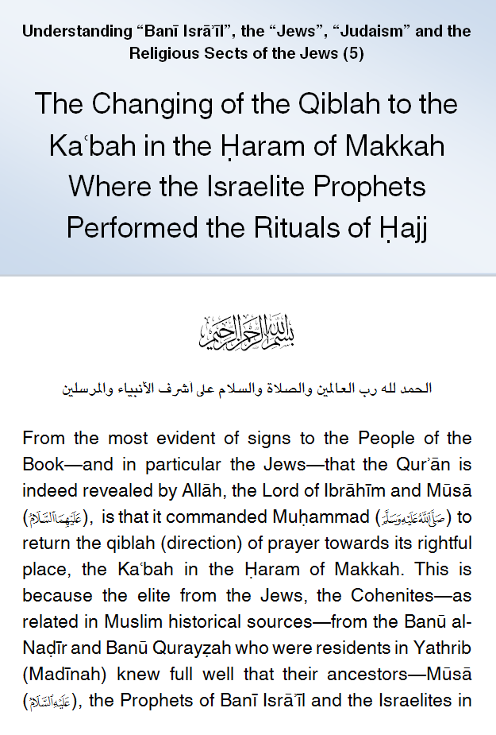
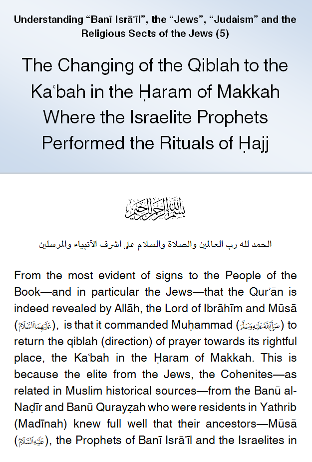

IslamMoses.Com
Posted by Abu Iyaad on Sunday, September, 23 2018 and filed under General
Key topics: Israelites • Children Of Israel • Judaism • Mecca • Hajj • Jews

|
IslamMoses.Com |
|
The Changing of the Qiblah to the Kaʿbah in the Ḥaram of Makkah Where the Israelite Prophets Performed the Rituals of Ḥajj Posted by Abu Iyaad on Sunday, September, 23 2018 and filed under General Key topics: Israelites • Children Of Israel • Judaism • Mecca • Hajj • Jews 
|